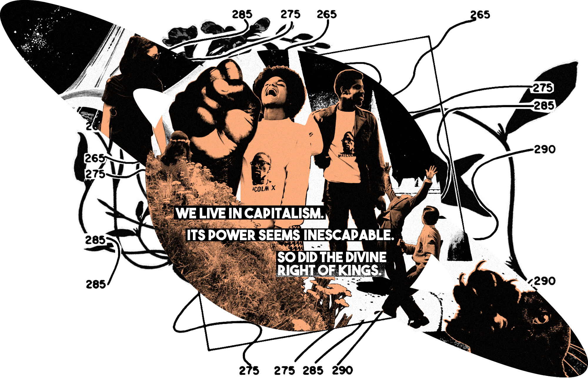
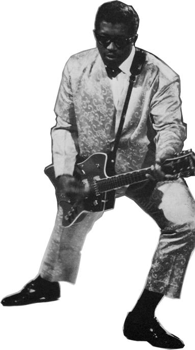
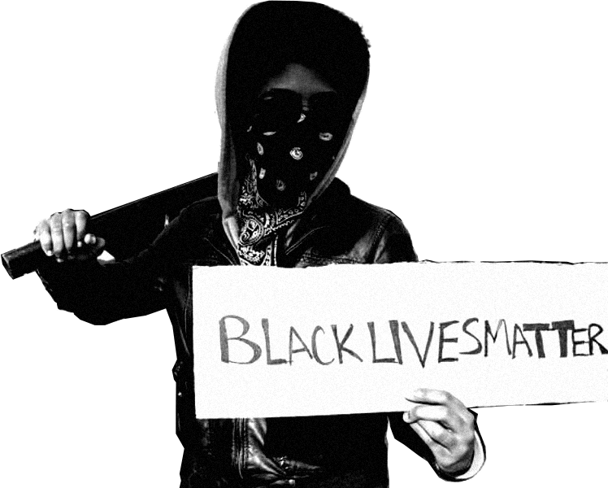

Economic
Liberation

A Shared Future
The notion of debt is only 5,000 years old, an estimated 0.2% of human history, neither a universal truth nor a foregone conclusion. The people can create a revolutionary new economy, one that works for the betterment of all.
…we can see that money is fake… it is just pure socialization that we believe that we cannot live in a world without money… — Katie Hinchey-Wise, MSc
…money, similar to so many aspects of life, is a social construct. It’s a piece of paper. If we were to say it means nothing tomorrow, we could easily continue physically functioning as a people but then people would be on the same playing field, and again, certain people don’t want that… — Dr. Christina Harrington
…I could see us one day, like kids being in school looking back and we’re long gone, like kids being in school looking back on this like, ‘yeah man, they used to like, fight, they used to like argue over money, everything was about money, man, they just really liked money. I’m so glad things aren’t like that anymore. I’m so glad we get to like, live, and like, eat our apples off the tree.’… — Fawziyya Heart
…we have been self-regulating on the black market for thousands of years, and that capitalism has sort of blinded us to what is possible and what is already happening because we see money as the official sanctioned system and we lose the perspective that there are so many other systems already happening… — Katie Hinchey-Wise, MSc
…right now we have a ‘socialism for the rich’ and I want it obviously to be for everyone. I don’t necessarily know all the ins and outs of either system, I just know for a fact that right now it’s not working for most people. I think it is criminal to allow billionaires to exist when so many people cannot afford basic needs like food and shelter. It’s clearly a problem that needs to be addressed immediately… — Valerie Frolova
…you just do what you regularly do but you’re doing what you’re passionate about so that the job is getting done well. Everybody’s just functioning in a life doing what they want to do to make the little fucking thing spin, the wheel spin… — Fawziyya Heart
…even if you’re in the gig economy, you can talk to your coworkers, you can join an Uber driver group and find out what’s happening to other people. If you’re not listening to other people and how the system is affecting them, then you’re not going to know where all the cracks are in what’s happening… — Katie Hinchey-Wise, MSc
…economically, things will be centered even more around worker’s cooperatives. People controlling their labor should be the goal. They’re not alienated from the fruits of their labor and from that profit… — Jeanne Laïka
…an ideal world involves the abolition of poverty… — Dr. Kimia Pourrezaei
…an ideal world is one where we don’t need fiat currency to compensate for labor… — Jeanne Laïka
…an ideal world looks like a more socialist approach to wealth and ownership, people having land and not working until they’re in the ground just to be paycheck-to-paycheck… — Dr. Christina Harrington
…in 100 years, in my ideal world I would love to see more worker’s cooperatives and people being more engaged socially with one another. We’re getting to the point where we don’t need to work all that much. We have the technology, we have the ability to consume and waste less. We could have everything we wanted… — Jeanne Laïka
…I’m a socialist at heart…how is it that some have all the money and others none? Give everyone what they need to survive and give them support. Every problem comes down to a capitalist system, to money. The way the financial system is set up to trickle down to everyone seems nearly impossible.… There is too much need and too great a lack of funding... If it is repeatedly not working, we need to dismantle it… — Marion Leary
…I have been so amazed and so excited to see so many people that I never expected to do the work doing the work and understanding what capitalism is. These kids on TikTok blow my fucking mind. If I had the information that they did, maybe we would be in a different place, but the more that we are learning, the more likely we are to have systems to build into these places… — Katie Hinchey-Wise, MSc
…if you’re concentrating wealth and resources in one area, it’s bad for everyone short term and long term. If people can grasp that and learn that lesson soon, it will be a little bit easier to make decisions when they’re more personal. That’s what we’ve seen with worker’s cooperatives, in which workers are much less likely to act greedily or make decisions that are shortsighted… — Jeanne Laïka
…every philosophy that is anti-capitalist, if you reframe them they are pro-community and pro-connection. The opposite of capitalism is sharing, and everyone’s life is improved if we are sharing.… A shift in focus from consumption to creation is a giant shift towards a better world for us… — Jason Killinger
…there is a cultural goal to acknowledge the value of the other. Success is not the cost of another. What is the cost to yourself?… — Anonymous
…I would love to have something that could be a foundation in South Dakota…something that could actually have a model of sustainable stability… — Sadie Red Wing
…we need to stop treating people who make our stuff as disposable. For our basic needs, like clothes and furniture, we definitely need to move the production back to the U.S. and have those jobs available for people here. This way we will also reduce the emissions associated with transportation… — Valerie Frolova
…in my utopia, there is no office work.… We have to feed ourselves, clothe, care for children and basic fundamentals to survive to not work. Allow people to support each other, instead of: ‘if you can’t work, you will starve.’ Some people can work and support people who can’t do that specific work…they can still each be part of our community. A lot of my friends and family do their 9-5 jobs or shift jobs and to relax go home to garden/baking bread/cooking meals for loved ones or themselves. In that way, when we talk about work in utopia…it isn’t necessarily the way we look at it now… — Anonymous
…there could be a way where everyone could come on this earth and live their purpose and do what they’re actually meant and want to do, and still fulfill all the jobs that need to be fulfilled but it be on some trading system. If I got to wake up and do what I wanted to do everyday I would happily do it without getting paid for it if all of my other needs are getting met by people doing their work that they want to do… Some people do want to do math problems all day. If you get everybody in the zone where they actually want to be, all the jobs would be filled. It’s just that people would be doing what they want to do… — Fawziyya Heart
…I’ve been thinking a lot about the post-work society. We’ve realized that we don’t need all of these jobs, we don’t need all these people working in these ancillary jobs that only exist because people work so much. I’m an essential worker, so I don’t know what that would look like for me, but the reason why there’s such a need for psychiatrists, mental health workers, therapists and social workers is because of chronic stress, which exists because we work way too much… — Dr. Kimia Pourrezaei
…‘play’ and ‘sharing’ are the kinds of things that we have assigned only to children. People act like adults aren’t supposed to do those things but we teach children that it is required of them… — Jason Killinger
…people should all have access to sports whether it is to play, to engage, or something that makes it happy for them. Sports should be open to everyone.When kids are playing in the neighborhood and running around playing with a ball because they are not worried about what the correct behavior is for their gender or circumstances. Kids learn later if a girl beats a boy in sports, the boy isn’t very good in the sport. This will not be an issue at all in this world…separate it from the athletic activity itself. Allow people to be bad at sports and try to do them… — Anonymous
…the Southeastern Tribes like the Choctaw and Cherokee down in Oklahoma, Georgia, Mississippi, in the southeastern region they have this traditional game of stickball. Why is stickball not played at a college level? Lacrosse is! Bring some more Native American sports to more of a professional level… — Sadie Red Wing
…people who have younger traumas or intergenerational traumas are re-traumatized by everything that’s going on. People need to have new tools to think about and talk about these things, through food, through healing, or through play and movement. The new world will have to equip us with these things. People are obviously resilient, but when you try to get them to all work in the same mode, the thing holding them apart is trauma… — Lara Durback
…a utopian future involves, maybe not the abolition of work, but certainly far less work…There are people who love what they do, and for them there’s no differentiating work and play. Those are the people who should be the essential workers… — Dr. Kimia Pourrezaei
…I want people who have the expertise and the skills to apply them where they need to be applied… — Valerie Frolova
…right now, and especially in the Black community, we’re kind of seeing another resurgence similar to the Harlem Renaissance, with the ways in which we are expressing our lives through art, through music, through photography, through architecture…(essential work) that doesn’t feel like it will suck your soul out of your body… — Dr. Christina Harrington
…part of Indigenous culture is to say that you’re not creating for today, you’re creating for a couple generations in the future. I’m planting a tree, not for me to eat the fruit today, but so that my children or my grandchildren can eat the fruit. That’s Indigenous thinking. When it comes to financial structures, I would definitely tax people, but I would also create more of a barter system for people. If your goal is to assist community growth and health and we would have access to all of those resources, then for personal things, there would be a barter system.… you can barter with people based not on what you believe something’s monetary value is, but if I need something and you have it, this is what I have for you and we can trade. It’s simpler than the capitalist structure where we think of things having incredible value, and you can’t trade something with incredible value for a bushel of apples. You can’t do that. That’s not going to work. But in a true barter community system, you could negotiate those trades. I need a place to sleep for the night, can I create art for you? I’m going to strategize a system for you, a project for you, but I don’t cook, I hate cooking, can you make me a couple of meals.’ And if you agree then that’s a fair trade off… — Nicole Rodill
…capitalism is the root cause of why we have so many Covid-related deaths because you have a disease that some folks are denying because they need businesses to run because of money and needing to keep money in their pockets. You have some folks that are going to die because they need to continue to work because of money. These people are not people that are working because they are trying to hoard riches, they’re just trying to keep their lights on and feed their families. That’s driven by greed, by landlords, and by development owners not being able to say ‘hey, let’s stop all of this for however long because of humanity.’… — Dr. Christina Harrington
…day-to-day basic labor would be divided amongst people: washing clothes, cooking food, more communal, and everybody pitches in… — Dr. Kimia Pourrezaei
…mothers should get paid leave for six months. They don’t have to rush back and lose that time to bond with their kid. The guy could stay at home. The parents will have more time with families… — Anonymous
…getting rid of capitalism goes beyond getting rid of capitalism.… We all currently believe that we have to compete for a finite amount of resources to survive and that some people are just inherently more worthy because they work harder to have more things. You could get rid of capitalism but that ideology would still persist under a different name.… What it looks like after that is an understanding that our wellbeing is shared and intrinsically connected… — Jason Killinger
…why do you really have to pay for electricity? What are you actually paying for? For a machine to work? And for people to make money off of it? I don’t know how electricity works, I’m assuming it’s just some big-ass machine or something… — Fawziyya Heart
…design is a part of (a critical lens against capitalism): rethinking the structures and the systems of how we operate, thinking about ways to create living infrastructures that are equal. Affordable housing doesn’t have to be the lowest tier of housing, and public spaces don’t have to be unsafe. There are ways that design can intervene to make that equitable… — Dr. Christina Harrington
…decolonization also means deconstructing capitalism completely.… I think it would be really hard to deconstruct that and bring it down, but adjusting for capitalism, giving people space for housing, I think it just requires taxing the rich. They’re on our Indigenous land, tax that. If you are on the land, own buildings: higher taxes. That money goes back into the community pot so that means housing solutions. I’m an ‘eat the rich’ person so I think that’s part of decolonization anyway… — Nicole Rodill
…I would love to see representation in other places. I would love to see Native American-manufactured motorcycles, for instance… — Sadie Red Wing
…I would like to see a situation where the purported trillions of dry powder is allocated to something other than growth at all costs… — Sameer Soleja
…it’s definitely a 50- to a 100-year goal to get to the point where everyone is treated equally and everyone can have a decent life and have their basic needs met but also have the freedom to go and start their own thing… — Valerie Frolova
…it doesn’t matter what’s happening in the city that you moved to. They call it ‘metronormativity’ in queer organizing, that the metronormative way to tell you to engage in activism would be to say ‘go to a local meeting, find a café, blah blah blah.’ That’s not what activists in Kansas need… — Katie Hinchey-Wise, MSc
…my hope and dream is: as we, tribal nations, move forward in regaining our sovereignty (aka U.S. government accepting our treaties and allowing us to function as a sovereign nation), I would like tribes to establish their own form of currency. The idea of a tribe's own currency, or way of purchase, is still an advanced idea — a dream really — because we do not have the means to accumulate or "bank" wealth..especially in the rural reservations. This idea will be a good goal for tribes to strive for. But, we need partnership from non-sovereign communities and U.S. states. One example of partnership from "allies" would be allowing us Tribal Members to use our Tribal IDs as functioning "IDs". If a Native American is expected to be enrolled in a tribe, and own a tribal identification card, then we should be able to use that card as a form of identification… — Sadie Red Wing
…Mr. Rogers said, ‘The connections we make in the course of a life — maybe that’s what heaven is. We make so many connections here on earth. Look at us — I’ve just met you, but I’m investing in who you are and who you will be, and I can’t help it,’ so maybe our heaven is not the future that is so beautiful that we constantly are imagining in church, maybe it’s our interactions with the people here that are around us, and maybe we should make the utopia that we so often are dreaming about and are so often motivated by. But you have to choose to be a helper and you have to choose to be a person who’s educating themselves about utopias and the future and capitalism… — Katie Hinchey-Wise, MSc


